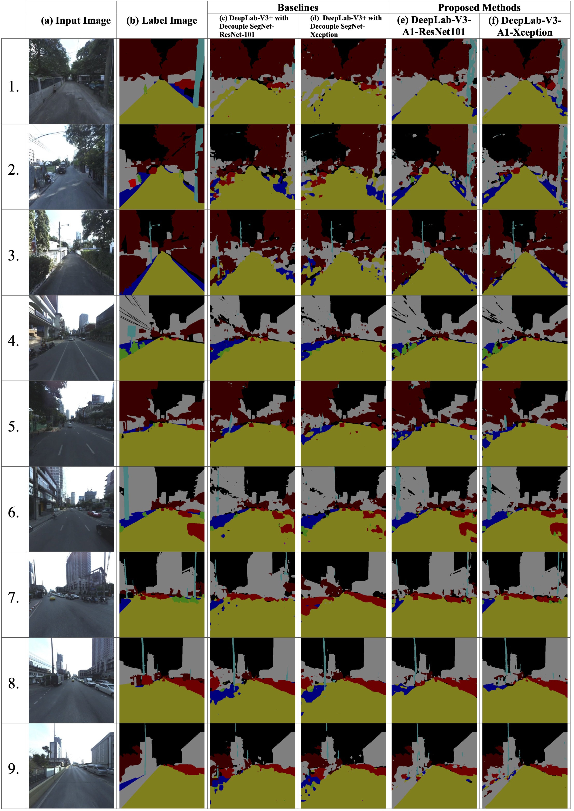
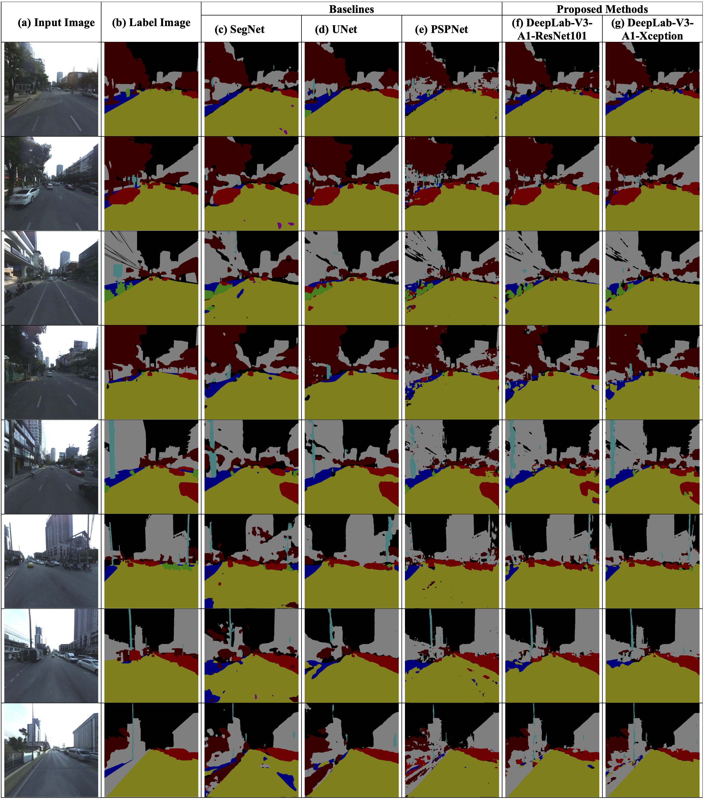
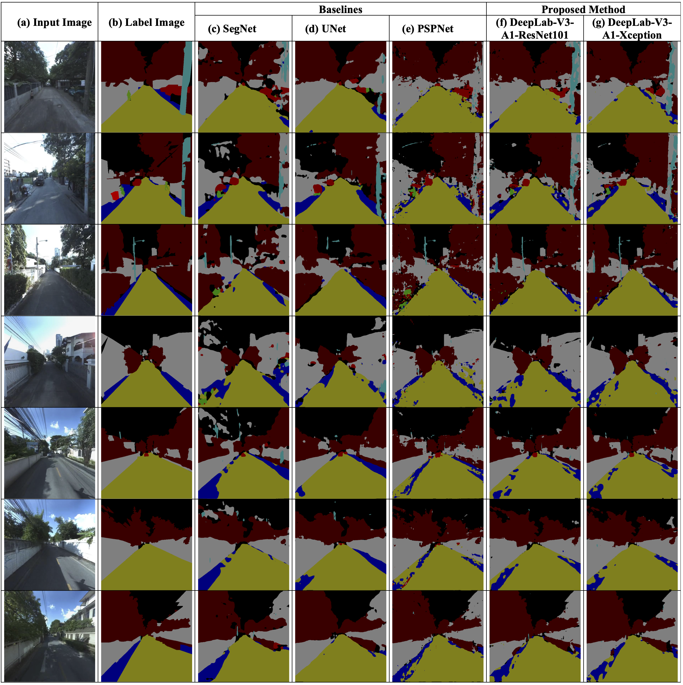
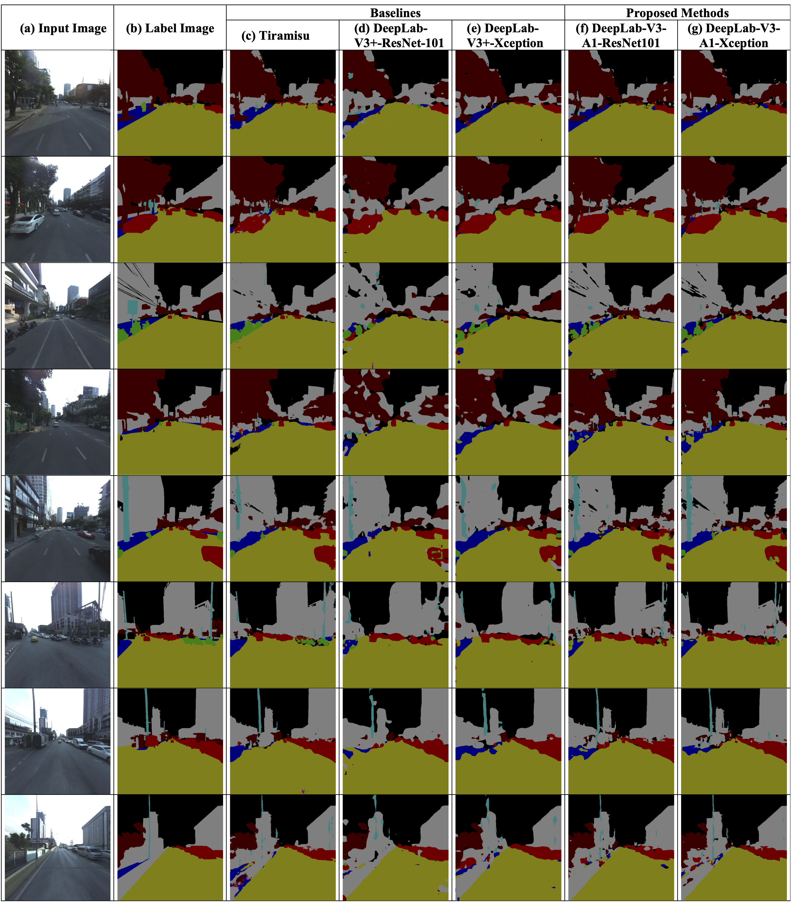
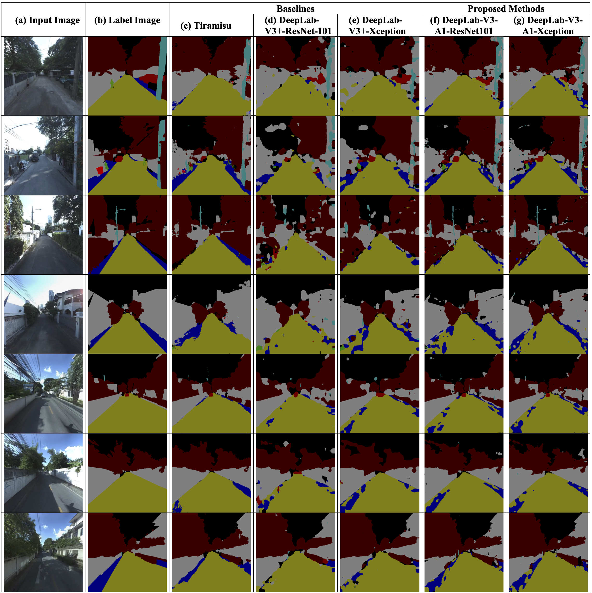

🏡 Bangkok Urbanscapes Dataset for Semantic Urban Scene Understanding
📜 (IEEE Access'22, Accepted!)
🗂️ Dataset Details
All images in the Bangkok Urbanscapes dataset have a resolution of 521 × 544 pixels.
Please cite our technical report if you use this dataset.
📄 Abstract
Semantic segmentation is a key task in computer vision with vast applications, including autonomous driving systems. This paper introduces both a novel method and a new dataset aimed at advancing the development of self-driving cars in Thailand.
We propose an enhanced version of the DeepLab-V3+ architecture, named DeepLab-V3-A1 with Xception, which improves on the original model by adding 1×1 convolution layers to the decoder and refining the Xception backbone for better image classification. Our approach was tested on four datasets: the proposed Bangkok Urbanscapes dataset, CamVid, Cityscapes, and IDD, showing competitive performance across all metrics, including mean IoU, F1 score, Precision, and Recall.
In particular, our model achieved a mean IoU of 78.86% on the Cityscapes validation set. Our contribution includes the Bangkok Urbanscapes Dataset, which consists of 701 urban scene images from Bangkok, annotated with 11 semantic classes: Road, Building, Tree, Car, Footpath, Motorcycle, Pole, Person, Trash, Crosswalk, and Miscellaneous. We hope this dataset and our model will help improve autonomous driving systems in cities with traffic and driving conditions similar to Bangkok.
💻 How to Use
🔧 Installation
Ensure all dependencies are installed by referring to requirements.txt. The codebase requires Python 3.7 and PyTorch 1.7.1.
Download the official CityScapes dataset from here and resize the images using this script.
🚀 Training the Model
To pre-train models on the CityScapes dataset, run the scripts in the scripts directory. Modify the dataset paths as needed.
./scripts/train.sh📊 Downstream Evaluation
To evaluate the model on downstream tasks, use the following scripts. Adjust the paths to the datasets and pre-trained models accordingly. Note that linear evaluation can be time-consuming on a single GPU as it involves fine-tuning a linear layer on a new dataset.
./scripts/eval_linear.sh
./scripts/eval_knn.sh📁 Pretrained Models
You can find our pretrained models under releases.
📈 Results





🔖 Citation
If you use our work, please cite the following paper:
@article{thitisiriwech2022bangkok,
title={The Bangkok Urbanscapes Dataset for Semantic Urban Scene Understanding Using Enhanced Encoder-Decoder with Atrous Depthwise Separable A1 Convolutional Neural Networks},
author={Thitisiriwech, Kitsaphon and Panboonyuen, Teerapong and Kantavat, Pittipol and Iwahori, Yuji and Kijsirikul, Boonserm},
journal={IEEE Access},
year={2022},
publisher={IEEE}
}🙏 Acknowledgements
This project builds upon the work of the TensorFlow and SegmentationModels repositories. We extend our gratitude to the authors for their contributions. If you use our model, please consider citing their work as well.